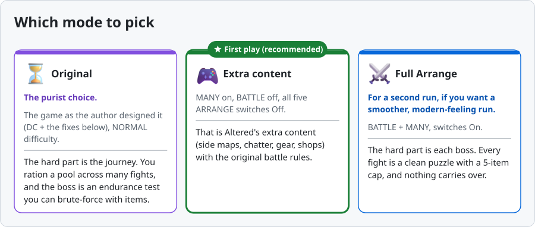
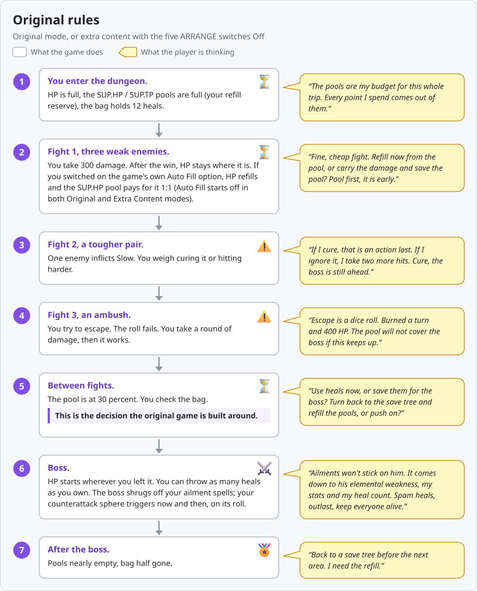
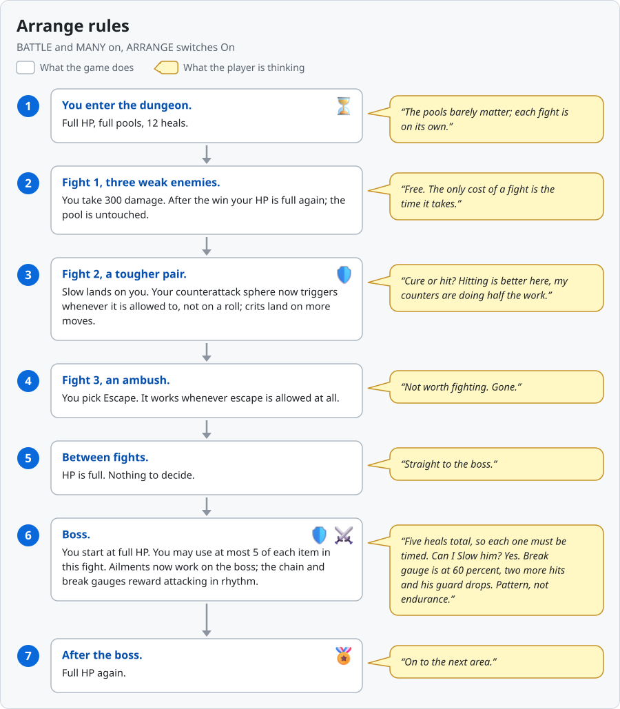
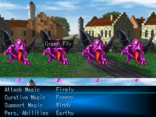
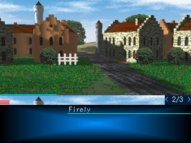
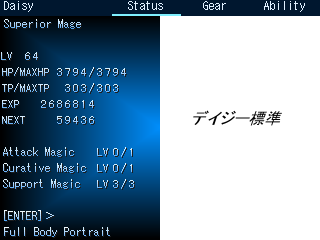
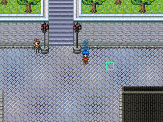

*Seraphic Blue* (Tempura, 2004, RPG Maker 2000), in English again: every dialogue box retranslated from the Japanese, a MOD menu (fewer random battles, speed, cheats, message history, mouse play), and an optional English build of the *DC Altered* fan patch. One ZIP per build; no original game, patching or extra downloads needed.
Status: released. Current versions: v0.2.0 (DC builds) and v0.2.1 (Altered build). Bug reports and questions: Issues.
Which mode to pick. Two separate choices: first the build (which ZIP you download), then the mode (Altered build only). The three bullets below are builds. They are not the three mode cards further down.
Then pick your mode (Altered build only). Three modes, shown below: Original, Extra content (first play, recommended) and Full Arrange. The DC builds have no mode choice.

| Original | Full Arrange (BATTLE + MANY) | |
|---|---|---|
| Design | Attrition: the challenge lives between fights | Per-encounter: the challenge lives inside each boss fight |
| HP after a fight | Carries over to the next fight | Full HP after every fight |
| Refills | The SUP.HP / SUP.TP pools refill you and can run dry | Not needed between fights |
| Items | Your buffer, no per-battle limit | 5 of each item per fight |
| Escape | Can fail | Always works |
| Counterattacks | A dice roll | Always fire |
| Ailments on bosses | Bosses resist them | Ailments work on bosses |
| Turn order at the start | Fixed rules | Random opening turn order |
| Gear and shops | As designed | 50 new items, rebuilt shops |
Same party, same dungeon, same three fights and one boss. Each step: what the game does, then what the player is thinking. No story content. Assumes the MOD's "Escape always works" row is Off (the default from v0.2.1 on). These rules apply in Original mode, and in the extra-content mode with the five ARRANGE switches Off.

1. You enter the dungeon. HP is full, the SUP.HP / SUP.TP pools are full (your refill reserve), the bag holds 12 heals.
- "The pools are my budget for this whole trip. Every point I spend comes out of them."
2. Fight 1, three weak enemies. You take 300 damage. After the win, HP stays where it is. If you switched on the game's own Auto Fill option, HP refills and the SUP.HP pool pays for it 1:1 (Auto Fill is off at new game in Original mode; on in extra-content mode).
- "Fine, cheap fight. Refill now from the pool, or carry the damage and save the pool? Pool first, it is early."
3. Fight 2, a tougher pair. One enemy inflicts Slow. You weigh curing it or hitting harder.
- "If I cure, that is an action lost. If I ignore it, I take two more hits. Cure, the boss is still ahead."
4. Fight 3, an ambush. You try to escape. The roll fails. You take a round of damage, then it works.
- "Escape is a dice roll. Burned a turn and 400 HP. The pool will not cover the boss if this keeps up."
5. Between fights. The pool is at 30 percent. You check the bag.
- "Use heals now, or save them for the boss? Turn back to the save tree and refill the pools, or push on?"
- This is the decision the original game is built around.
6. Boss. HP starts wherever you left it. You can throw as many heals as you own. The boss shrugs off your ailment spells; your counterattack sphere triggers now and then, on its roll.
- "No tricks work on him. It is a stat check plus my heal count. Spam heals, outlast, keep everyone alive."
7. After the boss. Pools nearly empty, bag half gone.
- "Back to a save tree before the next area. I need the refill."
One line: the hard part is the journey. You ration a pool across many fights, and the boss is an endurance test you can brute-force with items.

1. You enter the dungeon. Full HP, full pools, 12 heals.
- "The pools barely matter; each fight is on its own."
2. Fight 1, three weak enemies. You take 300 damage. After the win your HP is full again; the pool is untouched.
- "Free. The only cost of a fight is the time it takes."
3. Fight 2, a tougher pair. Slow lands on you. Your counterattack sphere now triggers whenever it is allowed to, not on a roll; crits land on more moves.
- "Cure or hit? Hitting is better here, my counters are doing half the work."
4. Fight 3, an ambush. You pick Escape. It works whenever escape is allowed at all.
- "Not worth fighting. Gone."
5. Between fights. HP is full. Nothing to decide.
- "Straight to the boss."
6. Boss. You start at full HP. You may use at most 5 of each item in this fight. Ailments now work on the boss; the chain and break gauges reward attacking in rhythm.
- "Five heals total, so each one must be timed. Can I Slow him? Yes. Break gauge is at 60 percent, two more hits and his guard drops. Pattern, not endurance."
7. After the boss. Full HP again.
- "On to the next area."
One line: the hard part is each boss. Every fight is a clean puzzle with a 5-item cap, and nothing carries over.
With the five ARRANGE switches Off in the extra-content mode, you get the Original trip above while keeping the extra maps, gear and shops. The remaining Arrange formula changes (crit rules, the Charge command, guard math, stat coefficients) stay on; they change numbers, not this flow.
Downloads: one ZIP per build. Pick the row that matches your choice above.
| Build | What it is | Download |
|---|---|---|
| EN + MOD + Altered (v0.2.1) | The English *DC Altered* Ver2.13 fan patch with the MOD. New game, or a save from the v0.2.0 Altered build. What is Altered? | seraphic-blue-fullgame-EN-Altered-v0.2.1.zip |
| EN + MOD (DC) (v0.2.0) | The English Director's Cut with the MOD. Same game data as test.13: your saves keep working. | seraphic-blue-fullgame-EN-v0.2.0.zip |
| JP + MOD (DC) (v0.2.0) | The Japanese Director's Cut with the MOD (Japanese MOD menu). | seraphic-blue-fullgame-JP-v0.2.0.zip |
All downloads. Each ZIP includes its game, the Windows and older native Linux Players, and launchers. v0.2.1 updates only the Altered build; the two DC downloads stay on v0.2.0.
Download → Extract All → double-click PLAY.cmd → PlaySetup: Windows · Linux / Proton · Steam Deck. On Windows, double-click PLAY.cmd. Follow the linked Steam/Proton steps on Linux or Deck.
Controls: confirms; goes back. Fast-forward: hold for 3x speed, hold for 10x (EasyRPG Player feature; both speeds adjustable in Settings > Input, controller: right trigger).
Save location: the saves folder inside the extracted game folder, when launched with the included launcher or documented Steam options. Keep this folder when updating.
| Your platform | Start here | Newest mouse features? |
|---|---|---|
| Windows | Double-click PLAY.cmd. Windows steps | Yes |
| Linux through Steam / Proton | Add Player.exe to Steam; enable Proton. Linux steps | Yes; compatibility not verified here |
| Steam Deck | Desktop Mode: add Player.exe to Steam; enable Proton. Deck steps | Yes; hardware not verified here |
| Native Linux alternative | Run sh play-linux.sh. Requirements | Older test.2 controls; new hover/tabs/walking are unavailable |
| macOS (experimental) | Official Mac EasyRPG Player + this ZIP's game data. Mac steps | Custom Player features unavailable; not Mac-tested |
Keep your saves: three steps.
1. Close the game.
2. Download the new full game (EN + MOD, DC) and extract it.
3. Copy the saves folder from your old game folder into the new one. Done.
Dropped the game years ago? Saves from the Japanese original or the 2016 English patch load here too: copy your SaveXX.lsd files into the saves folder.
Altered build: saves from the v0.2.0 Altered build load in v0.2.1 the same way (copy the saves folder from the old SeraphicBlue-Altered folder). DC saves do not load in the Altered build; keep them on the EN + MOD (DC) build.
1. Close the game. Keep a backup of your actual save folder.
2. On test.6 or older, first apply the test.7 image update (extract beside RPG_RT.ldb, replace the Picture files).
3. On test.7 or older, download the test.8 update. Extract it into your game folder, beside RPG_RT.ldb, and allow replacement of Player.exe, RPG_RT.ldb, Map0003.lmu and one Picture file. If your Player.exe lives in another folder (older patch installs), copy the new Player.exe there instead.
4. On test.8 or older, download the test.9 picture update. Extract it into the same folder, beside RPG_RT.ldb, and allow replacement of the 55 Picture files.
5. On test.9 or older, download the test.10 update. Extract it into the same folder, beside RPG_RT.ldb, and allow replacement of Map0507.lmu.
6. On test.10 or older, download the test.11 update. Extract it into the same folder, beside RPG_RT.ldb, and allow replacement of Player.exe and the 43 Map files.
7. On test.11, download the test.12 update. Extract it into the same folder, beside RPG_RT.ldb, and allow replacement of the 45 Map files.
8. Download the test.13 update. Extract it into the same folder, beside RPG_RT.ldb, and allow replacement of the 22 Map files.
9. On test.13: nothing to update. The v0.2.0 EN + MOD (DC) build has the same game files.
10. Keep your saves, config and EasyRPG.ini. Saves from earlier tests load normally.
Skip this if you installed the test.6 or test.7 full game: the test.8 update above already replaces Player.exe.
1. Close the game and back up the saves folder (or your existing custom save location).
2. Download the test.6 Windows Player ZIP for Windows or Proton (the newest Player ZIP with all DLLs). Extract it separately.
3. Copy Player.exe and all .dll files from that same ZIP into the folder containing your old Player.exe. Replace those files only. Keep saves, EasyRPG.ini and game data.
4. Then apply the test.7 image update and the test.8 update from the section above; the test.8 Player.exe replaces the test.6 one and uses the same DLLs.
Native Linux has no newer binary than test.2; use Proton for the latest engine features. Existing patch-based installations can continue using their current game/save paths.
What it is. *Seraphic Blue (DC Altered Version) Ver2.13* is an unofficial fan patch for the Director's Cut by 腐林檎 ("Rotten Apple") and 時空転移プリン ("Space-Time Warp Pudding", ◆YuikkIDGis). Tempura (Sakaki), the original author, was not involved; the Altered authors ask players not to contact Sakaki or the Blue Field boards about it. Credits from the Altered manual: music by 氷石彩亜 (FREEDOM HOUSE 2nd), 星野春日 (Muzie), 煉獄小僧 (煉獄庭園) and Ciel (Le Ciel Bleu); sound effects by WEB WAVE LIB; backgrounds by aska (Silverry moon light); battle-animation graphics from Character Maker Pro (Enterbrain); help from the 2ch Blue Field threads and 風邪薬 ◆RohTo3cNBI. The Altered manual (Japanese) is included in the ZIP (ManualAlt, 改造版マニュアル.htm).
What this build adds: the whole game in English (Altered's new text translated, its Japanese picture text redrawn in English), the MOD menu, the Original-mode choices below, and the standard RPG Maker files the game expects (so no separate runtime install is needed). EasyRPG Player is included and required: the database has 8,040 variables and picture ids up to 78, which the old RPG_RT.exe cannot run (it is not included).
New game only (saves from the v0.2.0 Altered build carry over). Start a new game in this build. Keep DC saves on the EN + MOD (DC) build: the test.13 download stays up, and the v0.2.0 DC download uses the same game data. The ZIP extracts to its own SeraphicBlue-Altered folder; read IMPORTANT README (MUST READ).txt first.
Each row is On (Altered) or Off (Original). The default is On, so a run plays as in v0.2.0 until you change a row. The rows are used only in Arrange mode; Original mode always plays the original rules.
| Switch | On (Altered, default) | Off (Original) |
|---|---|---|
| Full HP after battle | HP is fully restored after every battle | HP refills from the SUP.HP pool, as in the original game |
| Item limit per battle | At most 5 of each item in a battle (20 when the item limit is lifted); the rest returns after the battle | No per-battle limit |
| Escape always succeeds | Escaping works whenever escape is allowed | The original escape roll (the MOD's own "Escape always works" row still applies) |
| Counterattack always fires | A counterattack always triggers when it can | The original counter chance |
| Enemy stats and resistances | Altered's enemy data | The original enemy data (enemies that are new in Altered keep theirs) |
| MOD row | On the Altered build |
|---|---|
| Walk speed, Hold Shift to run | Not in the MOD menu: use Config > Dash Movement (page 1) |
| Battle speed | Not in the MOD menu: use Config > Battle Speed (page 3; FAST2 also skips skippable effects) |
| Menu fade | Not in the MOD menu: use Config > Screen Speed of Menus (page 2) |
| Save anywhere (cheat) | Not in the MOD menu: use Config > Normal Save Method: MENU (page 1) |
| MOD button | Menu slot 9. With Save Method MENU, slot 9 asks Save / MOD / Break |
| ARRANGE page (v0.2.1) | Altered build only: the five ARRANGE switches above. Pages: SPEED, BATTLE, ARRANGE, CHEATS, INFO |
| Random-battle intro, Cutscene speed, Random battles 1/N, Rewards follow the rate, Escape always works, Retry lost battles, Full heal, Return to world map, +10,000 DEAR, Level up party, early MOD access | As on the DC build. Retry also gives back the items Arrange's per-fight limit held back. |
Deck buttons below need the suggested Steam Input bindings. They are not a bundled controller preset. New controls require the latest Windows Player, including through Proton.
Select menus, spells and targets
|
 |
Find the next spell or item page
|
 |
Switch Status / Gear / Ability without backing out
|
 |
Click or tap to walk
|
 |
Advance dialogue and story pauses
Open: / Deck B → select MOD → / A. Before the story unlocks the game menu, / Deck B opens the MOD screen directly (no CHEATS page yet). Navigate: / X changes page; / selects a row; / changes its value. / A confirms actions. Settings apply immediately and stay with your save. Choose INFO for the in-game explanations. The Altered build adds an ARRANGE page (see the Altered build above).
| Setting | Try / result |
|---|---|
| Walk speed / Hold Shift to run | Choose 2x for faster walking. Enable running; hold / X to run. Scripted movement stays unchanged. |
| Battle speed | Choose 2x–10x for shorter waits/animations; Instant skips animation waits. |
| Random-battle intro | Off skips the random-battle flash; story intros stay. |
| Menu fade | Choose 0.1 s or None for quicker menu transitions. |
| Cutscene speed | Choose 2x/5x/Instant to shorten scripted waits. This changes scene pacing. |
| Setting | Try / result |
|---|---|
| Random battles | Choose 1/2–1/10 for fewer fights, or Off for none. |
| Rewards follow the rate | On scales EXP, DEAR and SUP.EXP to compensate for fewer random fights. |
| Escape always works | On guarantees escape from random battles; story battles stay unchanged. |
| Retry lost battles | On offers a retry after defeat. Items spent in the lost fight stay spent. |
Enable the CHEATS page when asked. Select an action and confirm. Save first before teleporting or saving during an event.
| Action | Result |
|---|---|
| Full heal | Restores party HP and TP. |
| Return to world map | Returns to your known world-map position; can skip events. Visit the world map first. |
| Save anywhere | Opens saving here; unusual save locations can interrupt events. |
| +10,000 DEAR | Adds 10,000 currency. |
| Level up party | Raises every party member by one level. |
| Action | Mouse | Keyboard / suggested Steam Input |
|---|---|---|
| Select / confirm | Hover / | Arrows / ; D-pad / A |
| Back / cancel walking | / B; arrows cancel walking | |
| Change battle list page | or page arrows | / |
| Switch character tabs | Top tabs | Page Up / Page Down; optional LB / RB |
| Secondary action | Follow the displayed hint | / X |
| Message history (last 100 boxes) | up while a message shows or while walking; wheel scrolls; closes | Page Up opens; / scroll; Page Up / Down page; / B closes |
| Fast-forward | Hold for 3x, for 10x; controller: right trigger |
Steam Input bindings are suggestions, not a verified Deck layout. Touch does not provide hover before contact.
| Try this | Mouse | Keyboard / suggested Deck buttons |
|---|---|---|
| Secondary actions in Gear, shops or battle | Follow the visible hint; still needs a key/button | / X; opens the action shown on that screen |
| Buy or sell several items | Click -10 / -1 / +1 / +10, then Buy/Sell | Arrows adjust quantity; / A confirms |
| Supplement or Upgrade amounts | Hover a digit/amount; wheel adjusts; click Apply/Upgrade | Arrows select/adjust; / A confirms |
| Dictionary and history | Hover supported rows; wheel changes list pages or scrolls history | Arrows navigate; / A chooses where applicable |
Native name-entry and number-entry keep their original keyboard controls.
Release notes and translation comparison. How does this translation compare to the 2016 patch? Side-by-side page: Japanese, 2016 English, this English, and why for several hundred dialogue boxes, plus a separate section on lines the 2016 patch softened. Spoiler warning: it quotes dialogue from the whole game. It is gated by story part, but skip it if you want to go in blind. Opening and Episode 2 only, with later sections hidden until selected: early-game corrections.
New in v0.2.1 (Altered build only):
New in v0.2.0:
New in test.13:
New in test.12:
New in test.11:
New in test.10:
New in test.9:
New in test.8:
Credits. Thank you to Tempura (Sakaki) for creating this work of art and sharing it freely with the world. This MOD exists because of that creativity and generosity.
Thank you to eplipswich for the tremendous work of translating Seraphic Blue into English and making its story accessible to more players.
Thank you to 腐林檎 and 時空転移プリン for *Seraphic Blue (DC Altered Version)*, which the Altered build carries.
See the full original credits.
---
Use the latest game-data MOD with the official Mac EasyRPG Player. A custom Mac Player is not included.
1. Download the full game and extract it. Keep the SeraphicBlue folder together.
2. Install Homebrew if needed. In Terminal, run:
brew install easyrpg-player3. In Terminal, type `cd ` (including the space), drag the extracted SeraphicBlue folder into Terminal, and press . Run:
mkdir -p saves config
easyrpg-player --project-path . --save-path saves --config-path config --encoding 932 --windowControls: arrows select/move; confirms; goes back; runs/opens secondary actions. Saves go in SeraphicBlue/saves.
Limits: script-based MOD options are expected to work. Custom hover/click targeting, click-to-walk, character tabs, enhanced text reveal and battle-animation acceleration need our modified Player and are unavailable here. This Mac route is untested. Official Mac support · Homebrew package.
English game content and its original manual/credits are included. The JP + MOD full game (v0.2.0) and the separate Japanese patch are available for Japanese players. Native Linux remains the previously tested Ubuntu 22.04-compatible test.2 runtime. No full-playthrough or physical Deck verification is claimed.
Modding notes: what broke when this MOD met the Altered fan patch, how each problem was found, the fix, and the build order that worked. Docs images are script-generated (docs/img/tools, licences in docs/img/LICENSES.md).